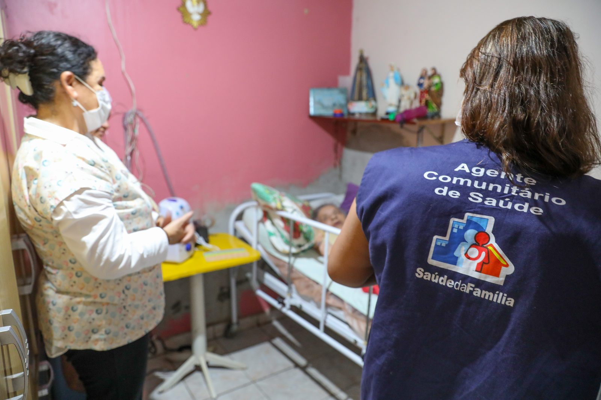
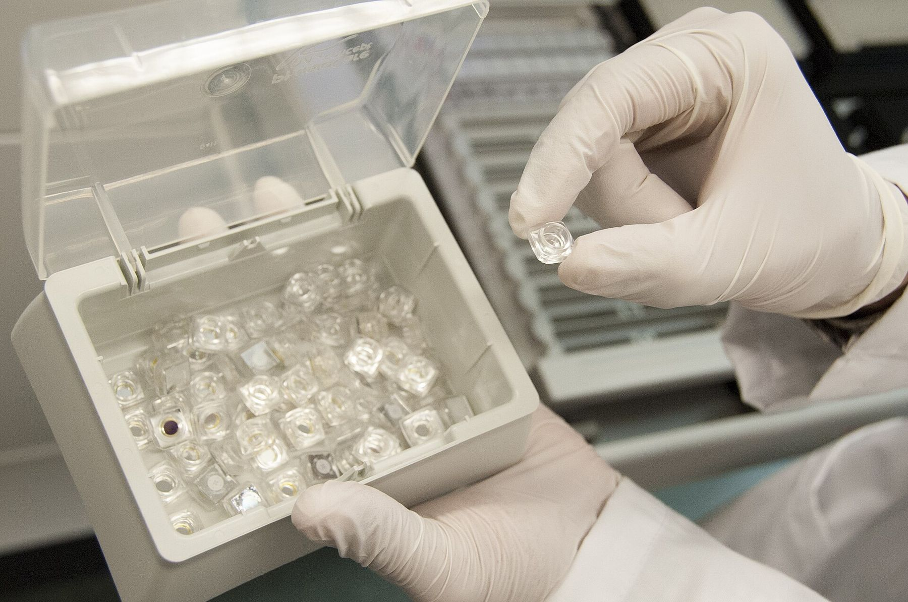
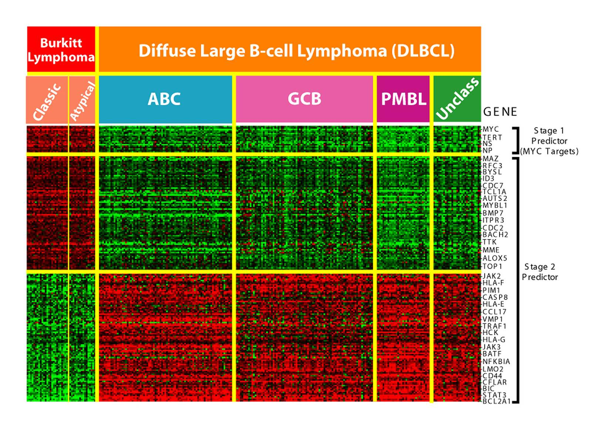
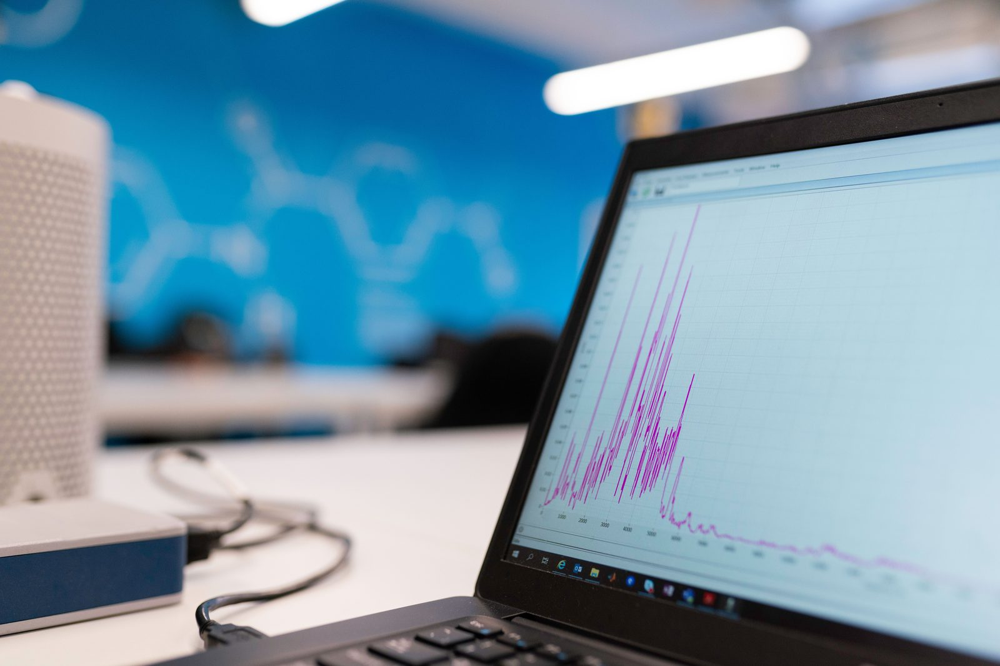
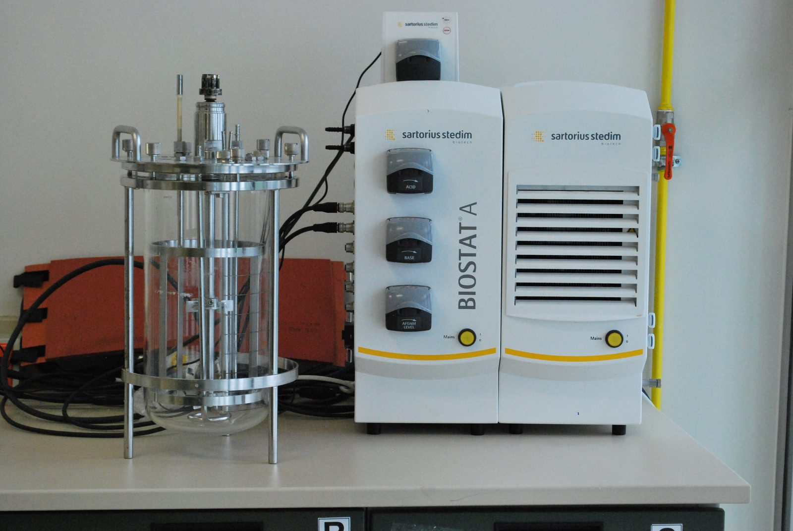

[DCG] Biomedical & health informatics consulting
Identifying the strategy for your success in health-related business.
Working together, we can bring a solution to your problem.We provide it when your business needs it.Satisfaction guaranteed.
Datta Consulting Group helps organizations serving social- and healthcare with data analytics, custom software, AI training and precision medicine support.

Biomedical InformaticsHealth informatics and bioinformatics for Precision Medicine
Satisfaction guaranteed"We provide it when your business needs it."
Cheyenne, WY 82001 · San Diego, CA 92130 · Palo Alto, CA 94306Monday to Saturday by appointment
FRC4UChoice4FitnessCHOISSHIPMa Belle LaUniversity of California SystemState of Illinois School Health ProgramNational Community CollaborativeCooper InstituteNational University (NUCRI)FRC4UChoice4FitnessCHOISSHIPMa Belle LaUniversity of California SystemState of Illinois School Health ProgramNational Community CollaborativeCooper InstituteNational University (NUCRI)
Appropriate information helps developing knowledge that helps taking smart decisions.
DCG mission[01] Services
What Datta Consulting Group does
Custom software development and support, plus a full range of data, project and training services.

Biomedical Informatics
Health Informatics and Bioinformatics consultancy, particularly for Precision Medicine.

Precision Medicine Support
Genomic analysis, and lab test results with health and demographic data from EHR and PHR.

Generative AI & LLMs
Train and customize Large Language Models on your own proprietary data.

Data Analytics
Data analytics for knowledge discovery (data mining), and business analytics.
Data Analysis & Reports
Data analysis and report generation, including R&D reports for pharma and biotech.

Database Development
Database development to support your applications and analysis.

Application Development
Custom software and mobile-supported responsive web portals.

Project Management
Projects managed with a pro-active attitude toward risk mitigation.

Education & Training
Education and Training, including on the application of AI.
[02] Who we help
Built for health and social-care organizations
Past and present work spans research, public programs and community care.
- Social- and healthcare organizationsSoftware systems and support for organizations primarily serving social- and healthcare.
- Pharmaceutical and biotech companiesR&D reports and biomedical data analysis.
- Community and public programsIncluding the State of Illinois School Health Program and community collaboratives in National City, CA.
- Higher education and researchIncluding work with the Office of the President, University of California System.


[04] How it works
Working together, step by step
Start a conversation
Reach out by phone, email or the contact form. Consultations are by appointment, Monday to Saturday.
Work closely together
We work closely with you toward your satisfaction to bring a solution to your problem.
End-to-end support
From selecting the right approach to design and delivery, with support along the way.
[05] From a client letter
"I had the pleasure of working with Arun Datta on multiple projects over five years in my former role as the School Health Program Manager for the Illinois Departments of Human Services and Public Health…."
Ms. Victoria Jackson, former School Health Program Manager, Illinois Departments of Human Services and Public Health[→] Contact
Ready to talk? Book a consultation.
Drop us a line or call. Business hours are Monday to Saturday by appointment.
Cheyenne, WY 82001 · San Diego, CA 92130 · Palo Alto, CA 94306
Monday to Saturday by appointment